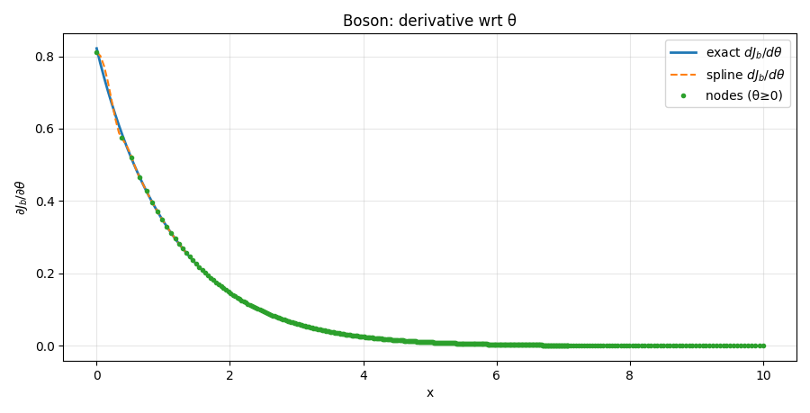
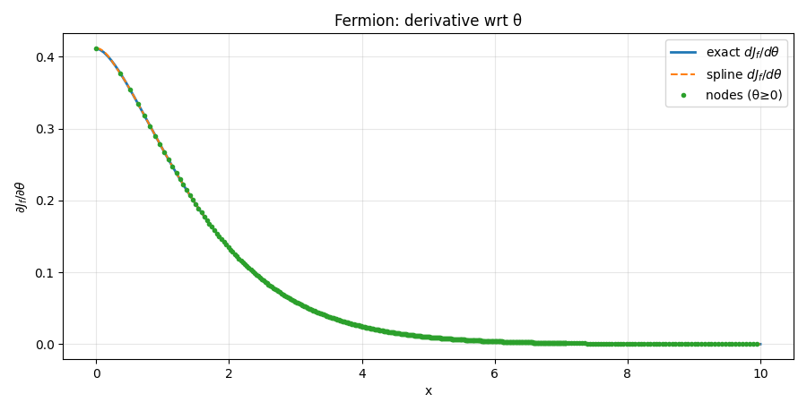
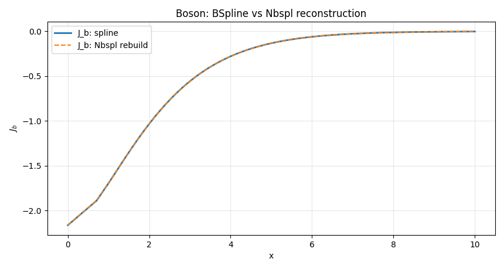
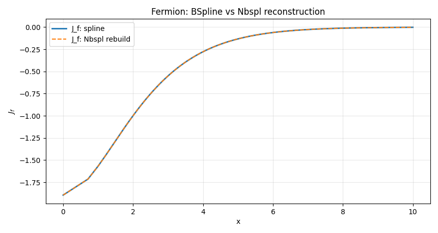

Spline Thermal Integrals (Jb, Jf)¶
The advantage of these functions is that, after creating a spline from the exact function's placement points, we can quickly obtain a value for any desired point x on the curve without having to go through the integration process directly required by the exact method. Furthermore, we can expect good compatibility between the values. This is one of the spline's main uses.
Spline Thermal Integrals (J_f)¶
Purpose¶
Provide a fast, differentiable surrogate for the exact fermionic thermal integral
by fitting a cubic B-spline to samples of the exact function \((J_f(\theta))\) on a non-uniform grid. The spline preserves the legacy API/behavior:
- Input is (\(\theta=x^2\)) (not (x)); (\(\theta\)) can be negative (imaginary (x) branch).
- For (\(\theta < \theta_{\min}\)): returns the clamped value \((J_f(\theta_{\min}))\).
- For (\(\theta > \theta_{\max}\)): returns 0 (and its derivatives 0), matching the physical larg -mass suppression in the legacy code.
- Supports derivatives w.r.t. (\(\theta\)) via
n(usesBSpline.derivative(n)).
Domain used: (\(\theta_{\min} = -6.82200203,\quad \theta_{\max} = 1.35\times 10^3.\))
Notes: * The spline is built from
Jf_exact2(theta)(exact quadrature) and cached to disk for reproducibility/speed. * Physically meaningful inputs here are real (\(\theta\)). A complex and real (x) (thus complex (\(\theta\))) has no direct meaning in this spline API—use the exact routines if you need analytic continuation details.
Jf_spline¶
Signature¶
Jf_spline(X: float | np.ndarray, n: int = 0) -> float | np.ndarray
Parameters¶
X(float | array_like): Input theta values (\(\theta=(m/T)^2\)). Scalar-in → scalar-out.n(int, default0): Derivative order w.r.t. (\theta) (0 for the function value, 1 for first derivative, etc).
Returns¶
-
out(float | ndarray): \((J_f(\theta))\) (or its (n)-th (\(\theta\))-derivative) evaluated by the spline. Behavior outside the fit domain: -
If (\(\theta < \theta_{\min}\)): returns the constant value at \((\theta_{\min})\).
- If (\(\theta > \theta_{\max}\)): returns 0.0 (derivatives also 0.0), per legacy behavior.
Notes¶
- Backend:
scipy.interpolate.BSpline(created viamake_interp_spline(..., k=3)). - The grid is denser near (\(\theta\le 0\)) and small positive (\(\theta\)), and sparser on the large-(\(\theta\)) tail.
- Accuracy is typically at the few × \(10^{-6}–10^{-8}\) level relative to the exact integral over the intended domain (depends on the internal grid sizes).
_ensure_Jf_spline¶
Signature¶
_ensure_Jf_spline() -> scipy.interpolate.BSpline
Purpose¶
Construct (once) and return the global BSpline object for \((J_f(\theta))\).
First tries to load a cached spline; if not found, it builds the dataset with Jf_exact2(), fits a cubic spline, and saves the spline parameters to disk.
Notes¶
- The cache file (by default) is
Jf_spline_v1.npz, containing the knot vectort, coefficientsc, and degreek. - If the directory is read-only, the code silently skips saving (still works in-memory).
_build_Jf_dataset¶
Signature¶
_build_Jf_dataset(n_neg: int = 420, n_pos_lin: int = 380, n_pos_log: int = 300) -> tuple[np.ndarray, np.ndarray]
Purpose¶
Generate a non-uniform theta grid and its exact values \((J_f(\theta))\) used to fit the spline.
- Negative branch: linear grid on (\([\theta_{\min}, 0]\)) (dense).
- Positive small: linear grid on (\([0, 50]\)).
- Positive tail: log grid on \((50, \theta_{\max}])\).
Returns (theta, y) with y = Jf_exact2(theta).
_load_Jf_cache / _save_Jf_cache¶
Signatures¶
_load_Jf_cache() -> None | tuple[np.ndarray, np.ndarray, int]
_save_Jf_cache(theta: np.ndarray, coeffs: np.ndarray, t: np.ndarray, k: int) -> None
Purpose (brief)¶
_load_Jf_cache: try to load a previously saved spline(t, c, k). ReturnsNoneif not available._save_Jf_cache: best-effort save of spline parameters to disk so subsequent runs are instantaneous.
Reproducibility & Performance¶
- The spline is deterministic given the internal grid sizes and the exact integrator tolerances (in
Jf_exact2). - First build takes ~seconds (quadrature over a few hundred points), thereafter ~milliseconds per call thanks to evaluation of a cubic B-spline (and its derivatives).
Spline Thermal Integrals (J_b)¶
Purpose¶
Provide a fast, differentiable surrogate for the exact bosonic thermal integral \((J_b(\theta) \equiv J_b(x^2))\) with (\(\theta=(m/T)^2\in\mathbb{R}\)), by fitting a cubic B-spline to samples of the exact function \((J_b(\theta))\) on a non-uniform grid. The spline preserves the legacy API/behavior:
- Input is (\(\theta=x^2\)) (not (x)); (\(\theta\)) may be negative (imaginary-mass branch handled via the exact routine during fitting).
- For (\(\theta < \theta_{\min}\)): return the clamped value \((J_b(\theta_{\min}))\).
- For (\(\theta > \theta_{\max}\)): return 0.0 (and derivatives 0.0), matching the legacy tail suppression.
- Support derivatives w.r.t. \((\theta)\) via parameter
n(usesBSpline.derivative(n)).
Domain used (legacy-compatible): (\(\displaystyle \theta_{\min} = -3.72402637,\qquad \theta_{\max} = 1.41\times 10^3.\))
Physically meaningful inputs here are real (\(\theta\)). Complex (x) (thus complex (\(\theta\))) is not used in this spline API; for analytic-continuation details use the exact routines.
Jb_spline¶
Signature¶
Jb_spline(X: float | np.ndarray, n: int = 0) -> float | np.ndarray
Parameters¶
X(float | array_like): Input theta values (\(\theta=(m/T)^2\)). Scalar-in → scalar-out.n(int, default0): Derivative order w.r.t. \((\theta)\) (0 for the function value, 1 for first derivative, etc.).
Returns¶
-
out(float | ndarray): \((J_b(\theta))\) (or its (n)-th (\(\theta\))-derivative) evaluated by the spline. Outside the fitted domain: -
If (\(\theta < \theta_{\min}\)): returns the constant value at (\(\theta_{\min}\)).
- If (\(\theta > \theta_{\max}\)): returns 0.0 (derivatives also 0.0), per legacy behavior.
Notes¶
- Backend:
scipy.interpolate.BSpline(created viamake_interp_spline(..., k=3)). - The grid used for fitting is denser near (\(\theta\le 0\)) and small positive (\(\theta\)), and sparser on the large-(\(\theta\)) tail.
- Choice of (\(\theta_{\min}\)) coincides with the minimum of (\(J_b\)), so the clamp at the left boundary plus the vanishing right tail makes the evaluated curve monotonic increasing and (\(C^1\))-continuous (matching the legacy intent).
Spline construction & caching (same pattern as Jf_spline)¶
The internal helpers follow the same design as for Jf_spline:
- Dataset build: generate a non-uniform \((\theta)\) grid
(linear on (\([\theta_{\min},0]\)), linear on (\([0,50]\)), logarithmic on \(((50,\theta_{\max}]))\) and compute ground-truth values via
Jb_exact2(theta). (Function:_build_Jb_dataset.) - Spline fit: build a cubic interpolating spline (
make_interp_spline) withextrapolate=False. (Created inside_ensure_Jb_spline.) - Caching: first try to load a cached spline
(t, c, k)fromJb_spline_v1.npzunderspline_data_path; if not present, fit and then save best-effort. (Functions:_load_Jb_cache,_save_Jb_cache, called by_ensure_Jb_spline.)
Performance: first build takes seconds (due to exact quadrature at a few hundred (\theta) nodes); subsequent runs are milliseconds (BSpline evaluation).
Reproducibility: the cache pins the fitted spline; if the directory is read-only, the code still works (keeps the spline in memory).
Spline Thermal Integrals (\(J_b, J_f\)) — Tests¶
This page documents the verification suite for the Spline Thermal Integrals.
We validate that the spline surrogates Jb_spline(θ) and Jf_spline(θ) (with \((\theta=x^2=(m/T)^2)\) ) reproduce the exact one-loop integrals and their θ-derivatives,
and that the spline implementation is consistent with the B-spline basis from helper_functions.Nbspl.
Plot styling used below
- Solid: exact curve (as a function of (x), with (\(θ=x^2\))).
- Dashed: spline curve.
- Dots: collocation nodes (subset with (\(x\le 10\))) used to fit the spline.
- see tests/finiteT/Spline_Thermal_Integrals for more
We also print simple error metrics for quick checks.
Test 1 — Spline vs exact for (\(x\in[0,10]\))¶
Compare Jb_spline(θ=x^2) and Jf_spline(θ=x^2) against Jb_exact(x) and Jf_exact(x) on the same (x)-grid.
Expectation: curves overlap within quadrature/spline noise; max absolute error across the grid should be small.
Boson \((J_b)\): exact vs spline (with nodes)

Fermion \((J_f)\): exact vs spline (with nodes)

"""
=== Test 1: Spline vs Exact for x ∈ [0, 10] ===
Max |J_b (spline) - J_b (exact)| over x∈[0,10]: 1.180e-03
Max |J_f (spline) - J_f (exact)| over x∈[0,10]: 4.638e-05
"""
Test 2 — Derivatives: ( $\partial J/\partial θ $) (spline) vs exact via chain rule¶
The spline returns derivatives with respect to (θ). We compare against the exact derivative with respect to (x) using the chain rule:
We avoid (x=0) (singularity in (1/(2x))) and take (\(x\in(10^{-3},10]\)).
Expectation: close agreement; small deviations can appear near the very small-(x) end where the chain rule magnifies numerical noise.
Boson (\(dJ_b/dθ\)): exact vs spline (with nodes)

Fermion (\(dJ_f\)/dθ): exact vs spline (with nodes)

"""
=== Test 2: Derivatives — spline dJ/dtheta vs exact (chain rule) ===
Max |dJ_b/dθ (spline) - dJ_b/dθ (exact)| over x∈(1e-3,10]: 3.156e-02
Max |dJ_f/dθ (spline) - dJ_f/dθ (exact)| over x∈(1e-3,10]: 1.240e-03
"""
Test 3 — Compatibility with helper_functions.Nbspl¶
We reconstruct the spline value using the B-spline basis:
where (t) (knots), (c) (coefficients) and (k) (degree) come from the fitted BSpline. We evaluate
Nbspl(t, θ, k) @ c and compare to the direct J*_spline(θ) evaluation for (\(θ\in[0,100]\)).
Expectation: the two evaluations should match to near machine precision.
Boson (\(J_b\)): BSpline vs Nbspl reconstruction

Fermion (\(J_f\)): BSpline vs Nbspl reconstruction

"""
=== Test 3: Compatibility with helper_functions.Nbspl ===
Max |J_f (spline) - J_f (Nbspl rebuild)| on θ∈[0,100]: 4.441e-16
Max |J_b (spline) - J_b (Nbspl rebuild)| on θ∈[0,100]: 2.220e-16
"""
Notes & plotting details¶
- Input to the splines is always (\(θ=x^2\)). For Tests 1–2, we limit the x-axis to ([0,10]) and filter the node dots to (\(x\le 10\)) to avoid automatic axis expansion by far-right collocation nodes (which can reach (\(x\sim\sqrt{θ_{\max}}\))).
- Left boundary handling is clamp at (\(θ_{\min}\)); right boundary is zero for (\(θ>θ_{\max}\)), matching the legacy API (this is visible only if you probe beyond the fitted domain).
Jf_exact(x)returns complex (legacy); in the plots we show its real part, which is the physically relevant branch for real (x).